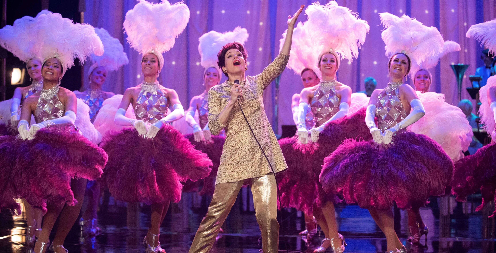
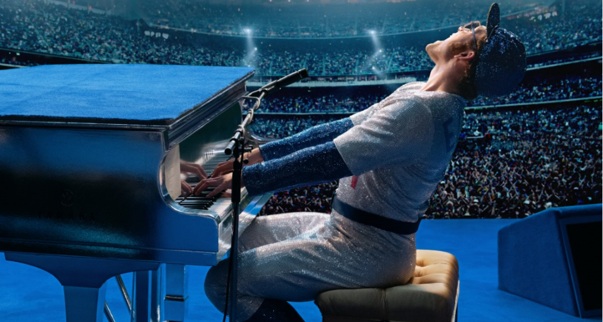
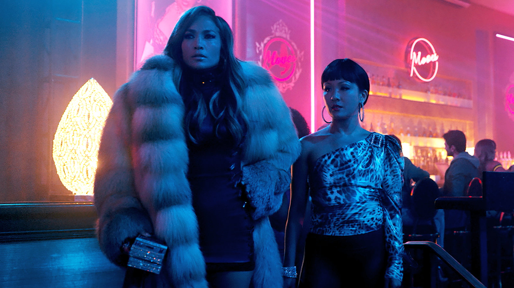
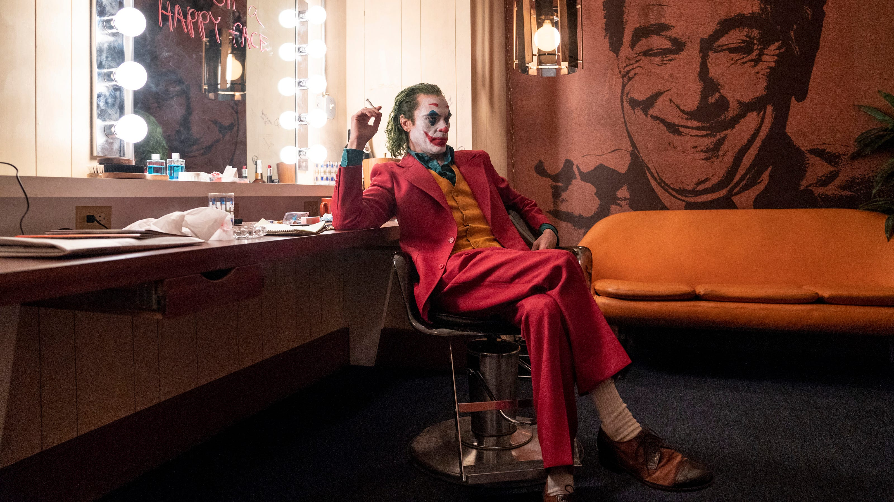
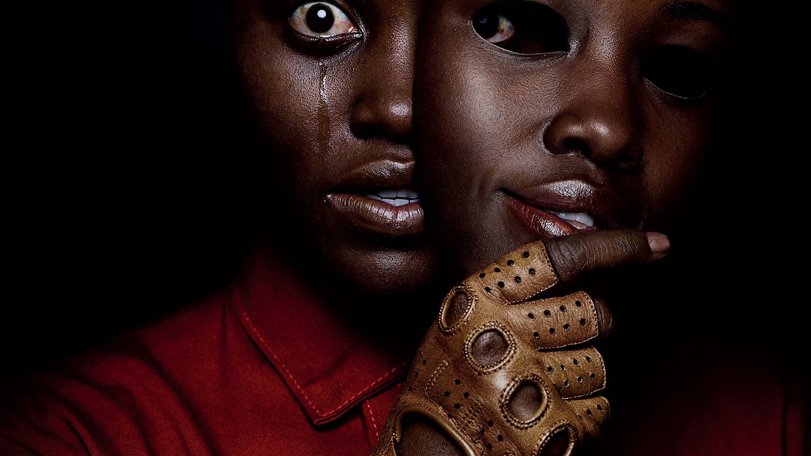
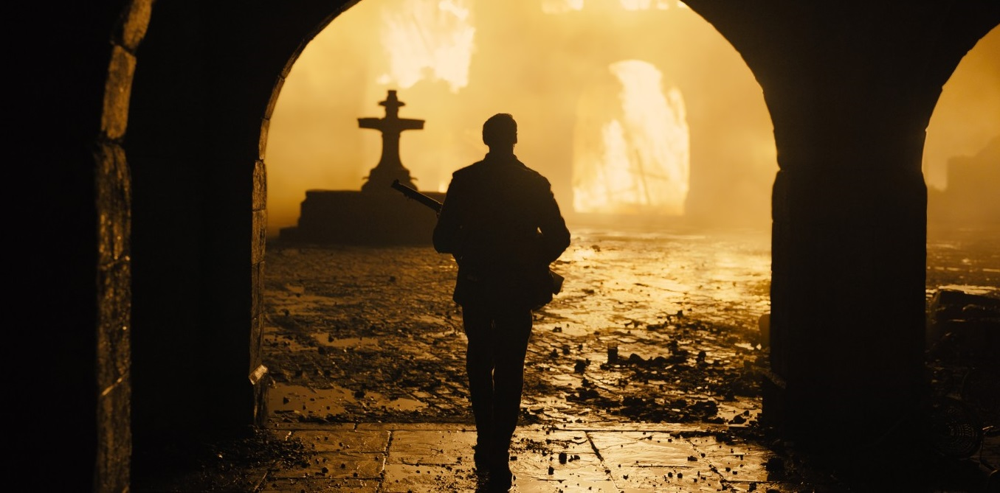
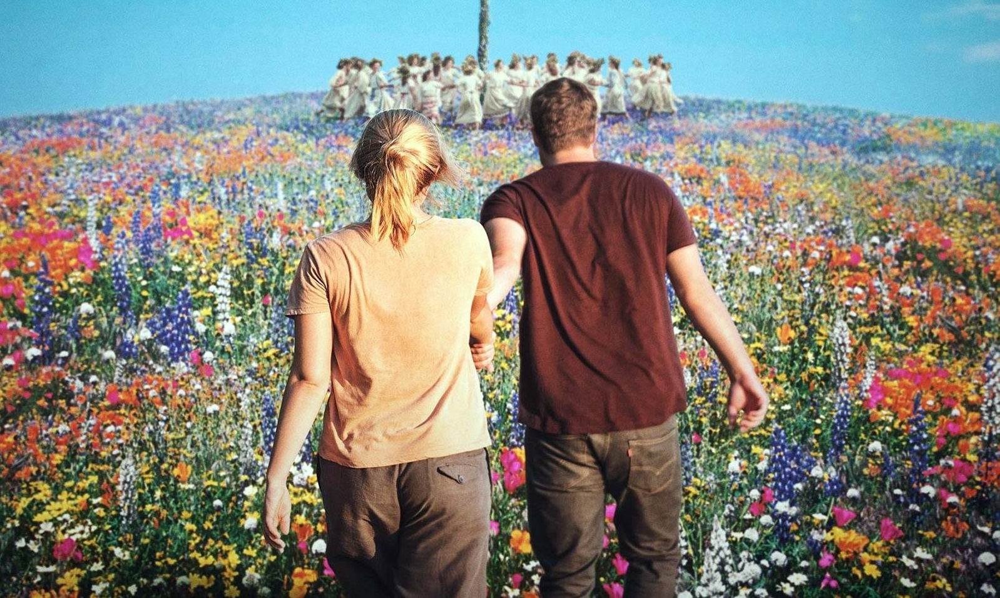

Movies of 2019, Ranked
An unexpectedly strong year considering Disney's box office domination
By Carson Zhang

Trying to keep up with the best movies circulating each year is a nightmare when you're a teenager whose life has no sympathy for his hobbies. Pretty much every good movie is screened at a festival which I cannot attend, after which it is given either a limited release (in which case I scramble to TIFF) or a "wide" release which does not include my theater that only plays superhero movies and weird Chinese flicks so I have to go downtown anyway and hope I don't get lost and wind up sleeping in a public transit washroom. Most professionals see over 100 movies released in a year while I barely scrape over 30. The silver lining in my lack of opportunities is that most bad movies usually crash and burn before I have the chance to see them, which saved me from The Goldfinch and completing The Laundromat. However, desperately hoping the films I love get attention around awards season always compels me to watch every garbage fire nominated for an Oscar regardless.
Last year was a catastrophic disaster in which the two movies I really loved (Roma and First Reformed) were niche arthouse pictures surrounded by typical Hollywood garbage: remakes (A Star Is Born), cliché biopics (Bohemian Rhapsody), and shallow films that got astounding acclaim before being swiftly forgotten (Green Book). This year it's the same as always, but though it's been particularly bad for adaptations, remakes, and uninspired drivel, most of which populate the worse half of this list, it's actually been quite a solid year for movies. I adored fifteen films this year and liked many more, which is an alarmingly exponential increase in comparison to last year. Maybe I've gotten better at picking them? Anyway, it was a great year for original material. Secretly dying grandmas, cunning portrayals of upstairs/downstairs drama, and Adam Sandler's eyes inexplicably shrinking in Uncut Gems were only a couple of the weird things that totally paid off this year, critically and commercially, proving that there's a viable market for great, original content. Though 1917 wouldn't be my choice to be the Best Picture frontrunner, it is admittedly satisfying that even an awards body full of narcissistic, archaic, elitist racists can actually put together an extremely strong list of films of the year. Of course, I can do much better than them, being only narcissistic, archaic and elitist. Without further ado, here is my ranking of the movies I saw in 2019, ranked from best to worst. Good luck getting through it, because it's far longer than my projected lifespan.
1. Cats
Directed by Tom Hooper, written by Lee Hall and Tom Hooper

Following the insipid period films Les Misérables and The Danish Girl, the almost impressively bombastic Hooper propels himself from mediocre talent to astonishing auteur with Cats. With his singular vision, what was once a rather weak play in the repertoire of Andrew Lloyd Webber morphs into an enchanting kaleidoscope of surreal horror and offbeat comedy. Drawing heavily from films like Eyes Wide Shut and Persona, Hooper makes his audience ponder their relationship with film itself. How do we, as viewers, influence the content that we consume, and how does it influence us in turn? What constitutes the threshold between reality and fantasy?
Just kidding, it’s one of the worst things I’ve seen in my entire life. And of course, this list will go from worst to best. I've read enough articles to know how to build suspense with a “best-of” list, or just make people scroll to the bottom of the list, grunt in disappointment, and close the tab.
37. Cats
Directed by Tom Hooper, written by Lee Hall and Tom Hooper

Following the insipid period films Les Misérables and The Danish Girl, the almost impressively bombastic Hooper hits rock bottom with the star-studded monstrosity Cats. All things considered, I suppose he was a sensible choice for an adaptation of the play. His take on Les Misérables is full of spectacle and devoid of character; the actors sing every line and dance during key narrative beats, making it impossible for any dramatic twists to land. While he was a terrible choice for Les Misérables, his talentlessness for storytelling is rather suited to Cats, an awfully written play whose big dance numbers seem perfect for such an ostentatious director. On top of that, there’s a grand trove of Hollywood stars with little acting talent desperate to be in a musical like Jason Derulo, Taylor Swift, and James Corden. Made with quirky costumes like the stage production or turned into an animated film, it might have been a commercial hit at least. Instead, Hooper opted for “digital fur technology” that turned famous singers like Swift and Derulo, as well as legendary actors Sir Ian McKellen and Dame Judi Dench, into humanoid cats. It’s embarrassingly bad and frequently terrifying, like when Rebel Wilson chomps down on some human-faced cockroaches before unzipping her skin. The plot is cliché and sparse while the performances are horrifically cringey, especially since every glance at the actors is an offense to the eye. There are a couple of things to like: the dances are solid, Webber and Swift’s “Beautiful Ghosts” is lyrically superior to most of the play’s original songs, and Jennifer Hudson’s performance of “Memory” is easily the film’s crowning achievement. Unfortunately, those small details can’t make this eldritch acid trip a decent viewing for any mortal demographic. Once the horror of seeing celebrities’ faces edited onto humanoid cats passes, which thank God it does, the film has nothing left to offer but jokes like “cat got your tongue?” and “look what the cat dragged in”, permanently scarring anyone still awake to hear them.
36. Captain Marvel
Directed by Anne Boden & Ryan Fleck, written by Geneva Robertson-Dworet, Anne Boden & Ryan Fleck

Marvel completists, people frantic for female-led superhero movies, and those eager for some backstory on Carol Danvers post-Avengers: Infinity War propelled this film to over a billion dollars at the box office; without those advertising narratives, however, it’d definitely have been DOA. Cats tried to be an innovative cinematic event, which completely failed. Captain Marvel, on the other hand, doesn’t try anything at all. It unsurprisingly fails to be inventive or challenging, but it also fails to be remotely entertaining in spite of its flashy effects. It’s just... there. Brie Larson, who won an Oscar for her exceptional performance in Room, is like you’ve never seen her: lifeless and dull. As Danvers, the accomplished actress delivers her lines with the emotional range of a Google Home device. It’s impossible to root for her because Larson’s performance gives no indication of any personality, and a script bloated with people flat-out telling us who Danvers is doesn’t help either. And that’s just the start of the scripting problems: Marvel’s fanbase deciphered the plot of the film way before its release, and it wasn’t because they’re particularly clever. The film spins a couple of comic book ideas into a dull, predictable film, and unlike other Marvel films the visuals and quippy humor aren’t enough to make Captain Marvel slightly enjoyable.
35. Spider-Man: Far From Home
Directed by Jon Watts, written by Chris McKenna and Erik Sommers

It’s just not good. It lacks any of the thematic coherence of Spider-Man: Homecoming, Jake Gyllenhaal is nearly Brie Larson level bad, the romance subplots are weak, and it’s another demonstration of awful worldbuilding from the biggest cinematic universe in history. Some of the visuals were impressive and Tom Holland continues to be a perfect Peter Parker, but it’s exceptionally forgettable besides an amusing post-credits scene. Which is much better watched on the internet than after two wasted hours in a movie theater.
34. The King
Directed by David Michôd, written by Joel Edgerton and David Michôd

I will credit Timothée Chalamet for picking such a diverse selection of roles in such a short time and being great at all of them. Between this film, Beautiful Boy, Call Me By Your Name, Lady Bird, and Little Women, as well as upcoming roles in Denis Villeneuve’s Dune and Wes Anderson’s The French Dispatch, he’s played just about every role a guy can get. As Henry V, Chalamet is the only actor in the cast who triumphs through this pitiful Shakespeare imitation. The plot is boring and the dialogue stiff, and it doesn’t help that Michôd effectively euthanizes the whole film with his utter lack of spirit. Soullessly, the film drags on from one scene to the next with the enthusiasm of a dead cockroach. Netflix has deep pockets, but with an increasing number of competitors they should really stop green-lighting films like this one. There’s a lot of good technical aspects to the film, particularly the set design and stunts, but they don’t amount to much when the script and direction make Game of Thrones’ final season look like its fourth.
33. Judy
Directed by Rupert Goold, written by Tom Edge
Definitely an unpopular opinion bound to get me crucified, but here goes: I did not like Renée Zellweger that much in this movie. Perhaps it’s because I’m missing some important details: the only Judy Garland film I’ve ever seen is The Wizard of Oz, which is perfect but didn’t exactly clue me in on her adult mannerisms. Historical accuracy aside, though, I just didn’t love what Zellweger brought to the role. She was great in all the singing parts, but the way she always seems primed to burst into tears is a strictly Zellweger tendency. Not exactly embodying someone else. Which is a shame, because she was the only reason I even considered watching this film. Judy isn’t terrible, but it’s typical, which is much worse. Garland’s story is a tragic Hollywood tale of Sunset Boulevard proportions, but Goold and screenwriter Tom Edge’s take on her life is a slogging bore. As is usually the case in lazy biopics, it isn’t even clear what they were aiming for in reimagining her life besides a couple of nostalgic tears from some senior citizens. The dissection of Garland’s life into a series of vignettes isn’t written, shot, or performed well enough to actually evoke any real understanding or empathy for the fallen star. There’s just no real spirit to Judy. It just checks off some history boxes, alters a couple of others, and drops dead. Zellweger’s awards success is a bleak reminder that average biopics are a trend that aren’t going anywhere, and they aren’t going to get any better.
32. Bombshell
Directed by Jay Roach, written by Charles Randolph

This film deserves some major recognition for Kazu Hiro’s prosthetic makeup, because the physical transformation of Charlize Theron into Megyn Kelly is incredible. Starring Theron, Nicole Kidman, Margot Robbie, and John Lithgow, it’s also exceptionally well acted. With so much talent on board, it’s a shame that Bombshell winded up as forgettable as it did. Rather than taking audiences on a brutally revelatory journey like Spotlight, Roach poorly mimics Adam McKay in this middling biopic that only grazes the reality of the sexual harassment scandal at Fox News. It’s not a coincidence that this film seems stylistically similar to some films by McKay; Bombshell screenwriter Charles Randolph also co-wrote McKay’s 2015 feature The Big Short. The thing is, McKay toyed with the medium in The Big Short to keep audiences engaged while he explained what financial instruments were. When your film is about a market crash from nearly a decade ago that focuses on opportunistic businessmen, it’s sensible to get creative with your delivery. Bombshell, on the other hand, focuses on workplace sexual harassment from the perspective of the victims. Sensationalism isn't just unnecessary, it's counterproductive. Expository voiceovers and fourth-wall breaks don’t communicate the terror and helplessness of the Fox News employees, they rob the film of hard-hitting drama. Theron’s narrating monologues aren’t about contractual agreements; they’re usually about character and backstory, things much better shown than told. Add that on top of the needlessly flashy edits and any immersion into the story is lost. Robbie goes to heartbreaking extremes in one chilling scene, but the rest of the film is swamped in surface level drama that’s full of McKay’s flair and devoid of his ambition. Bombshell delivers just an ounce of fresh perspective before the credits rollk, wasting a fantastic ensemble and contributing nothing to a timely conversation.
31. Downton Abbey
Directed by Michael Engler, written by Julian Fellowes

I’m not sure what I should say about this movie, because it’s just two hours of mindless English sumptuousness. Maggie Smith’s Violet is assuredly delightful and the script has some sharp witticisms, but the story itself is absurd, even by Downton Abbey standards. By the end of the third season, Julian Fellowes’ period drama had already begun falling off the wagon; by its final series, it’d lost all sense of verisimilitude in favor of insipid fan service. The new feature film picks up right where the television show left off, in principal if not in time. King George V (Simon Jones) and Queen Mary (Geraldine James) come to visit the Crawley family, a thinly veiled excuse for Fellowes and Engler to splurge their bigger budget on lavish sets and costumes. New relatives are introduced out of nowhere for some trite soapy drama, and any dignity the show concluded with is dashed away with more fan service. Over a handful of days, Thomas (Robert James-Collier) gets the happy ending that eluded him the entire series. Daisy (Sophie McShera) and Andy (Michael C. Fox) do too in an impressively lazy subplot, and the whole Downton staff schemes to get the tremendous privilege of serving their king and queen instead of taking a well-earned holiday, a notion so incongruous with the upstairs/downstairs dichotomy used to define Downton Abbey that it’s kind of sad. Still, Fellowes does get some credit; of all the bad pandering movies I’ve listed thus far, Downton Abbey is the only one that’s good at it. The plots are silly and reliant on nostalgia, but it’s hard not to chuckle at every Violet quip, or smile when Mr Carson (Jim Carter) rebelliously leaves the estate from the front entrance. It’s full of egregious flaws, but it’s the first truly enjoyable film on this list.
30. El Camino: A Breaking Bad Movie
Directed and written by Vince Gilligan

If I recall correctly, Vince Gilligan was once asked what Jesse’s (Aaron Paul) fate might have been in the wake of Breaking Bad’s finale “Felina” and basically replied with the plot of El Camino. Then, struck by a sudden bolt of inspiration, he decided to make that very obvious outcome, which he’d already explained to the press, into a television film. Better Call Saul was a huge success for Gilligan and his collaborators, but third time was not at all charming for the Breaking Bad universe. El Camino is frustratingly predictable and adds very little to the franchise (it counts as a franchise now, right?) besides another great performance by Paul and a scene-stealing turn from Jesse Plemons. As Todd, Plemons layers some eager-to-please Boy Scout qualities over the deranged neuroses he presented in Black Mirror: USS Callister to create a jarring blend of hilarity and psychopathy. Jesse himself, however, doesn’t get much enrichment from this latest Breaking Bad spinoff. Everything El Camino shows about Jesse’s growth, like his ability to make shrewd observations and improvise on the fly, was already depicted in seasons four and five of Breaking Bad. In fact, the entire film doesn’t tell us anything that the show didn’t already establish. Though it presents a cohesive narrative, El Camino is every bit as pandering as Downton Abbey. It has all the trademark features that made Breaking Bad great, but they’re packed into an empty film that goes nowhere narratively or thematically until it essentially winds up where “Felina” did. Well crafted as it is, El Camino is basically cut footage from season five and glorified fanfiction pieced together to tide audiences over before the next season of Better Call Saul.
29. Her Smell
Directed and written by Alex Ross Perry

Let it never be said that this film wasn’t original. Starring Elisabeth Moss as a rock star named Becky Something, lead singer of a band called Something She, Her Smell is edgier than a teenager’s Tumblr page. Charting Becky’s grueling journey out of the limelight, Perry’s film is completely opposite to dreamy Hollywood films like A Star Is Born. It’s revolting and repulsive at every turn, a visceral critique of the rock and roll lifestyle. I don’t like the film very much; the script is aggravatingly repetitive, spinning the same conflict in circles for two hours. No character in the film is really developed, which makes it hard to feel anything besides intense irritation every time Becky butts heads with someone. It’s a very unrewarding experience for such a tough watch, but there’s flickers of something great in the movie. One is Moss, who brings everything she has to her broadest role yet. From The West Wing to The Handmaid’s Tale, Moss has been one of television’s best performers for quite some time. Her transition into films has been shaky, Her Smell being a clear demonstration of that, but this role is easily the best performance she’s given in a movie to date. As Becky, she takes the child-birthing sequence from The Handmaid’s Tale’s “Holly” and matches it scene after scene. The other redeeming aspect of Her Smell is Perry himself, who has a distinct filmmaking style that occasionally shines through his abrasive script. Though the film’s writing is too hyperbolic for him to manage, he has a clear gift for psychological drama and twisted comedy that pushes actors to amazing heights. Her Smell’s bold experimentation fails to pay off, but Perry’s direction produces a promising showcase for Moss.
28. Avengers: Endgame
Directed by Anthony & Joe Russo, written by Christopher Markus and Stephen McFeely

I’ve gone back on forth on the placement of this film several times. It’s not good, but it’s got some brief bits of good acting and so much heart that I feel it deserves some commendation. The worldbuilding is horrendous as ever, continuing Marvel’s clear pattern of brushing over any real ramifications of events between films. The time travel plot is both really messed up and a blatant excuse to shovel more fan service and nostalgia at audiences who’ve already spent billions of dollars watching variations of the same cheap thrill tirelessly. That part with Thanos (Josh Brolin) in the beginning is dumb, several superheroes have their power levels inconsistently adjusted again (Scarlet Witch Scarlet Witch Scarlet Witch), and no number of flimsy rationales from the cast and crew can convince me that fat Thor (a low point for Chris Hemsworth) playing Fortnite wasn’t designed to be a lame gag. Oh, and there was that nightmarish scene when all the female characters casually squeezed into the frame. So empowering, especially when you remember that Marvel has only bothered giving one of them (the newest) her own movie. Gotta love Disney’s desperate attempts to boast diversity. Still, the movie features John Slattery, whose role as Roger Sterling in Mad Men is everything that Robert Downey Jr. aspires to be in the MCU. In Marvel terms, Downey is like Justin Hammer in comparison. Scarlett Johansson’s performance ensures that at least one character shows realistic development over five years, and it’s in no part thanks to the script. Downey also has some good scenes, tapping out of a decade-long role with the some of the best acting of his career. Not a glowing review considering his filmography, but he did pretty well. Plus, even I can’t deny how jaw-dropping the scale of this movie is. Dozens of Hollywood’s most bankable stars feature with breathtaking visual effects, epic fight sequences, and cute callbacks that commemorate film’s greatest superhero cinematic universe. Avengers: Endgame isn’t anything resembling a great movie, but it’s a fun ride.
27. Rocketman
Directed by Dexter Fletcher, written by Lee Hall
I might have liked this movie much more if it hadn’t been released on the heels of the abomination Bohemian Rhapsody. But here are the facts: After Bryan Singer was fired from the Queen biopic, Dexter Fletcher stepped in as director to finish the last bits of the film. Then Bohemian Rhapsody turned out to be a terrible film with a High School Musical plot and dialogue so unnatural that David Lynch would’ve squirmed in his seat. The involvement of Queen’s Brian May and Roger Taylor in Rhapsody also resulted in crude subplots designed to make themselves look more important. (Still had to Google their names, so jokes on them.) Fletcher then announced he would be doing Rocketman, a biopic about Elton John that would be everything that Rhapsody failed to be. It’d depict the rock star’s life with brutal honesty, a take endorsed by John himself. And then it came out, and totally didn’t live up to Fletcher’s hype. While rated R, Fletcher’s film is only a tad more true than Rhapsody, and it also has a High School Musical plot full of cartoonishly constructed characters. John, though played wonderfully by Taron Egerton, is the only realized figure amongst a crowd of caricatures, making the film nearly as dreadful as the horrid Queen biopic at its lowest moments. Egerton really is good though, especially in the singing parts that he actually performed himself. While the movie is mostly ordinary, the whimsical musical sequences are a sight to behold, and John’s discography is irresistible. Those small snippets of inspiration and Egerton’s committed performance propel Rocketman above Rhapsody, but almost all the same flaws are evident in yet another mediocre musical biopic.
26. Dolemite Is My Name
Directed by Craig Brewer, written by Scott Alexander & Larry Karaszewski

Dolemite Is My Name falls under the conventional biopic umbrella, but its unabashed heart and the sheer force of Eddie Murphy’s charisma are a marked improvement over other films like it this year. Starring Murphy as Rudy Ray Moore, the father of rap as we know it today, the film illustrates his daunting journey to success with the tireless enthusiasm of its subject. The joy of its ensemble is undeniably contagious, and it’s hard not to find yourself cheering for Moore and his band of misfits in spite of the by-the-numbers story. Wesley Snipes is a firecracking delight as D'Urville Martin, and Da’Vine Joy Randolph will steal your heart as Lady Reed. It lacks ambition or artistry, but the simple delight of Dolemite Is My Name is enough to keep the film afloat amidst a sea of other biopics this year.
25. Hustlers
Directed and written by Lorene Scafaria
This film is the first on this list that tried something different that actually worked. Somehow, writer-director Scafaria turned stripping, drugging and robbery into a moving story about sisterhood. It’s far from great: there are pointless flashbacks and narrations, and the film’s study of classism is limited to robbing rich people out of both necessity and spite. Nevertheless, it’s a solid feature from Scafaria that gives Jennifer Lopez the performance of her career. Constance Wu might lead the film as Dorothy, but Hustlers belongs entirely to Lopez’s Ramona. She’s maternal and loving to the girls, but she’s ruthless and manipulative with her clients. She has elegance and class, but her main jobs are stripping and conning. A tangled mess of contradictions, she’s much more intriguing than Wu’s bland protagonist. It doesn’t take a genius to see where the film is ultimately headed, but Dorothy and Ramona’s evolving relationship makes the journey a joy to watch. Hustlers is a weak depiction of the economic struggles of the late 2000s and its style and structure need some revising, but its exploration of a complicated friendship is beautifully layered.
24. The Two Popes
Directed by Fernando Meirelles, written by Anthony McCarten

Though the title suggests some soul-searching path to enlightenment, The Two Popes is actually very lighthearted and endearing, full of riveting back-and-forth from Jonathan Pryce and Anthony Hopkins. Proof: they drink Fanta and eat pizza while watching sports. There’s a lot to love, particularly from the legendary Hopkins, but Meirelles’ frantic camera work does the film a huge disservice. It’s hard to focus on Pryce and Hopkins’ banter when the camera is swerving back and forth, shaking constantly, and inexplicably zooming. Thankfully, Anthony McCarten’s script makes up for Meirelles’ weird imitation of The Hurt Locker, packing plenty of gut punches between charming moments of human connection. The Two Popes doesn’t shy away from difficult questions, nor is it horrifically preachy like those Christian movies that always score <20% on Rotten Tomatoes. Wisely, it lets the overarching plot, Hopkins’ Pope Benedict XVI stepping down and Pryce’s Pope Francis stepping in, organically lead to the obligatory conversations about morality and religion a film about two popes necessitates. Which can, fun fact, actually happen organically when you’re two popes. Bergoglio’s (Francis) liberal views and Ratzinger’s (Benedict) fidelity to tradition lead the pair into rapturous bickering, but their clashing ideologies don’t stop them from supporting and respecting one another. A little on the nose, but take notes people.
23. Joker
Directed by Todd Phillips, written by Todd Phillips and Scott Silver
Before I begin explaining why this film is maddeningly overrated, I’ll start with some nice things. The score is beautiful, as is typically the case with Hildur Guðnadóttir, who also scored Chernobyl. The cinematography, particularly the lighting design, is effective in establishing mood. Joaquin Phoenix crushes everything he’s given in this movie, giving one of the best lead performances this year. Joker’s technical aspects are excellent, which is why it’s kind of high on this list. It’s honestly a pretty solid film, but it’s been so overrated for so long that I’ve gone insane with frustration. Alas, this. Most superhero films just copy each other, offering slight variations of the same formula in order to guarantee box office results. Phillips, a daring artist, broke from tradition to copy Martin Scorsese instead. Look, I don’t mind if Doctor Strange rips off Iron Man. Those movies are simple entertainment that please most moviegoers. However, you do not blatantly steal from one of cinema’s greatest directors and defile his work with abysmal writing and pathetic delusions of genius. It isn’t just plagiarism, it’s artistic vandalism. And speaking of desecrating other people’s work, the story really didn’t need to take place in the DC universe; every aspect of the film that’s connected to the Batman mythos is contrived pandering and a sleazy way to sell tickets. Not to mention that Joker is a terrible title for the film, considering it has absolutely no sense of humor about the increasingly ridiculous tragedies its protagonist Arthur Fleck (a nevertheless remarkable Phoenix) suffers. To make things worse, Joker takes itself far too seriously in its attempts to be considered an artistic achievement. The script’s shallow take on complex subjects and unintentionally hilarious twists become even worse when plastered onto the screen, its numerous flaws intensified by the pretensions of a director way out of his depth.
22. Ford v Ferrari
Directed by James Mangold, written by Jez Butterworth, John-Henry Butterworth, and Jason Keller

The Academy should seriously consider an awards category for stunts, if only to reward this movie. The Fast and Furious franchise has been the rage for quite some time and we’ve all seen countless car chases in action movies, but the way that Ford v Ferrari handles its racing is fresh and exhilarating. It isn’t just for show, either; Mangold’s vision expresses the weightlessness of racing, the transformation into pure kinetic energy that Carroll Shelby (Matt Damon) describes at both ends of the film. Though its plot is as uninventive as Rocketman or Dolemite Is My Name’s, the absolutely insane stunts and performances in Ford v Ferrari are quite the wild ride. Brawls randomly bursting out on lawns, Henry Ford II (Tracy Letts) randomly bursting into tears, cars randomly bursting into flames, it’s an explosive catastrophe that’s thrilling to watch. Damon and Letts are both great, but Christian Bale’s performance as racecar driver Ken Miles is the best of the bunch. Miles and Shelby clashing with the evil corporate men of Ford Motors is a contrived, derivative idea, but Bale’s performance manages to twist a conventional narrative into a heartbreaking closing act. Even without a major physical transformation, he’s outstanding. With excellent performances and bracing stunts, Ford v Ferrari zooms past the other conventional biopics of 2019.
21. I Lost My Body
Directed by Jérémy Clapin, written by Jérémy Clapin and Guillaume Laurant

I would’ve loved to have been in the room when this movie got pitched. “It’s a story about overcoming tragedy with romantic undercurrents, told in flashbacks by protagonist Naoufel’s live, sentient, severed hand.” For real, it makes Cats seem tame. It’s every bit as weird as it sounds, but I Lost My Body’s creative animation and heartfelt sincerity produce an unexpectedly impactful story. I do wish that the hand stuff tied together better with the flashback plot, but the film’s conclusion is way more moving than any story about a severed hand finding its owner had any right to be. With a whacky premise and the heart to make it work, Clapin’s I Lost My Body is a touching reminder of the strength of human willpower in the face of ultimate despair. What’s not to like?
20. A Beautiful Day In The Neighborhood
Directed by Marielle Heller, written by Micah Fitzerman-Blue and Noah Harpster

Unlike any other biopic I’ve seen this year, Heller’s A Beautiful Day In The Neighborhood actually has a real purpose behind its retelling of historical events. Its narrative is as conventional as any other film above it on this list, but Heller’s take on Tom Junod’s 1998 article "Can You Say ... Hero?" is the first good adaptation on this list, properly translating Junod’s message to the screen by highlighting his key message instead of strictly following his source material. Revolving around reporter Lloyd Vogel’s (Matthew Rhys) meeting with Mr Rogers (Tom Hanks), A Beautiful Day In the Neighborhood doesn’t shy from the dark side of humanity, but it isn’t afraid of unwavering optimism either. Hanks is every bit as good as one might hope, gentle and understanding with a surprising willfulness you wouldn’t expect from the star of a kids show. It takes work to be a good person, even for Mr Rogers. However, it’s Rhys who really sells the movie for me. Fresh off a fantastic six years on Joe Fields and Joe Weisberg’s spy drama The Americans, he subtly makes heavy-handed dialogue seem remarkably profound in a perfect American accent. With minimal alterations, his performance as Vogel exudes a wholly different energy than his work as Philip Jennings, lost and fragile in spite of his chilly exterior. Guided by his formidable work, A Beautiful Day In The Neighborhood recognizes the challenges of opening your heart to the world and celebrates Mr Rogers for empowering a whole generation to do so.
19. Us
Directed and written by Jordan Peele
Following his acclaimed directorial debut Get Out, Jordan Peele’s Us delivers more horror-comedy and astonishing performances, but its grip on timely social issues lacks the impact of his first feature. The film offers fresh spins on familiar tropes to formulate the beginnings of a stunning exploration of classism, but it feels as if it ends on a comma instead of period. Thematic statements are only half formed before it’s over, and the latter missing half is much more promising than what we’re given. And though its blend of laughs and scares engages, Us doesn’t balance its tone quite as well as Get Out: maybe I’m not speaking for everyone when I say this, but I’d be a little more bothered if I murdered my own clone. Though the screenplay is lacking, Peele is every bit as skilled with striking visuals as he was in Get Out. In spite of its flaws, Us enthralls with fascinating motifs like swarms of rabbits, haunting dances, and a new take on “upstairs/downstairs” drama driven by a dual performance from Lupita Nyong’o. As Adelaide, she’s an uncompromising survivor like Charlize Theron’s Furiosa. As Red, she’s a haunting manifestation of pure horror. Her voice is unnerving and her facial contortions are skin-crawling, but it’s her sculpted grace that really makes her such a disturbing nightmare. Nyong’o bridges the two worlds of Us with huge range, bringing an otherwise shortcoming film to amazing heights with both guttural croaks and a stiff upper lip.
18. The Farewell
Directed and written by Lulu Wang

When trying to financing her film, Wang had difficulties finding studios to back her Chinese-American project. American studios thought that it was too niche and unrelatable, while Chinese investors were put off by the film’s American protagonist. Ironically, her struggle to get her movie made reflected the very struggles her movie examined. Too Chinese to be American and too American to be Chinese, Billi (Awkwafina) strives to find her own identity in a world where no one is keen to have her. On a trip to China to see her grandmother Nai Nai (Zhao Shuzhen), Billi feels the loneliness of culture shock as her entire extended family schemes to keep the family matriarch unaware of her terminal illness. Yet while a great portion of the film takes place in China and is spoken in Mandarin, at its core The Farewell is an immigrant story about an American family. It’s about the challenges of leaving home and never totally belonging anywhere, half your heart always somewhere across the world. Through the lens of a second generation Chinese-American, Wang’s story of culture and loss is a coming-of-age drama of the toughest order, taking Billi back to the nest before she’s dropped from the skies, forced to fly away with newfound grit and heartbreak.
17. Jojo Rabbit
Directed and written by Taika Waititi

For a World War II story about a Nazi youth whose imaginary best friend is Hitler, Jojo Rabbit is surprisingly affecting. Based on Christine Leunens's novel Caging Skies, Taika Waititi’s outlandish period drama constructs itself like a live action cartoon. Nazis are buffoons who spend all their time repeating “Heil Hitler”, unironically declaring their evil plans, and just saying weird stuff (“My friend once met some Russians and they ate him” being a particularly ingenious line). The jokes don’t always land, but they effectively set the juvenile tone of the film and spit on the Nazi regime, which never hurts. Jojo’s (Roman Griffin Davis) journey is much more typical than the concept would imply, but the gorgeous production value and a terrific ensemble spice it up. Scarlett Johansson plays his anti-Nazi mother Rosie, an incredible woman in spite of her small means, and Sam Rockwell’s Captain Klenzendorf dishes out dry cynicism between suspect antics with his assistant Finkel (Alfie Allen). They’re both seasoned actors who navigate fraught fantasy with humor and heart, but the film’s real standout is its breakout star Roman Griffin Davis. Jojo Rabbit might be a very childish movie, but Davis’ performance brings precocious maturity to the role far beyond his years. As Jojo, his conviction grounds the story’s utter insanity: somehow, he makes us cheer for him through letter forging and accidental self-demolition. The key plot points of the story are naive and predictable, but Jojo Rabbit’s innocent hero shamelessly wears his heart on his sleeve and it’s hard not to be moved by the evolution of his ignorant idealism.
16. Knives Out
Directed and written by Rian Johnson

A brisk and bracing remix of the typical whodunit, the ever-audacious Johnson takes a stab at the 1% in Knives Out with big laughs and bigger twists. The mystery movie stylistically and narratively evokes classic mystery stories, but its mockery of the upper class, rife with scathing insults, recalls Armando Iannucci’s political satire Veep more than Sherlock Holmes. Investigating the death of author Harlan Thrombey (Christopher Plummer), eccentric detective Benoit Blanc (Daniel Craig) leads us through a head-spinning journey into the lives of the Thrombey clan, a riotous ensemble featuring Jamie Lee Curtis, Don Johnson, Michael Shannon, and Toni Collette. Their petty clashes, deluded narcissism, and poorly veiled apathy makes them all generally horrible but hilarious to watch; calling each other Nazi children who masturbate to roadkill is just the tip of the iceberg. Knives Out isn’t quite as sharp as it promises, its big reveals falling a little flat and its satire rather dull, but it manages to squeeze a lot of satisfying drama into a captivating cinematic experience. The cacophony of the Thrombey family in contrast with Craig’s Blanc and housemaid Marta (Ana de Armas) really puts the film in focus. Marta stands out in a house of elitism by being Harlan’s only loyal companion, and her sudden reception of his huge fortune makes her a target for his murder of avaricious crows. It isn’t hard to tell what Johnson’s saying about the rich when the entire Thrombey family turns on their father’s immigrant maid when she inherits the money they so desperately crave. Blanc is also an outsider in the story, not only because he’s a detective, but also because he’s really weird. His name is Benoit Blanc, but he has a strange Southern American accent and is mostly useless throughout the film apart from one spontaneous bout of genius. Marta is the film’s heart, but Craig’s comical performance is its foundation. Knives Out would make a great franchise, if not for its clever wit then simply for more of Craig’s bumbling, inane investigator. (Rian Johnson has apparently begun developing a follow-up film featuring Benoit Blanc investigating a new murder mystery. He has also considered giving him a new accent for absolutely no reason. That is genius.)
15. Toy Story 4
Directed by Josh Cooley, written by Stephany Folson and Andrew Stanton

Toy Story is the greatest film franchise in the world besides The Lord of The Rings. Not one Toy Story movie misses its mark, and this latest feature about Woody, Buzz and the gang is a bullseye hit. There’s obviously a lot of emotional stuff, but the introduction of some new characters keeps this latest Toy Story installment bustlingly delightful. Forky, a spork in the middle of an existential crisis after being Frankenstein’d to life, constantly tries to jump into trash cans. Duck and Bunny are sometimes consumed by violent, rampaging fantasies. On paper it sounds really messed up, but as usual with Toy Story, a franchise that’s sort of about toys enslaved to apathetic masters, it somehow ends up being a lot of fun. Every Toy Story movie always finds new ways to tell another funny, touching tale about the same group of toys, but Toy Story 4 focuses on what I’ve always loved about the franchise and brings it to the forefront: the sacrifices the toys make in order to make their kids happy. Bo’s triumphant return is liberating, having reclaimed her life after living it for someone else so long. Her reunion with Woody is sweet, but it puts the cowboy in an impossible situation, tempted with the promise of a better life but obligated to Bonnie. Through his struggle to determine his future, Toy Story 4 commemorates Woody’s legacy as the series’ most faithful, devout toy while opening a whole new world of possibilities for the series.
14. Portrait of A Lady On Fire
Directed and written by Céline Sciamma

Since this film premiered at TIFF and vanished afterwards, I downloaded this film through a screener uploaded to the internet. It’s actually opening in the US and Canada on Valentine’s Day in 2020, which is great because it’s a film that really demands to be seen on the big screen. Shot by Claire Mathon, Portrait of A Lady On Fire is one of the loveliest pictures of 2019. The titular shot of Adèle Haenel is stunning, of course, but every frame of Portrait is a painting, recollections of a past love weathered by nostalgia and heartbreak. Sciamma’s story about a fleeting lesbian romance in 1770 between painter Marianne (Noémie Merlant) and soon-to-be wife Héloïse (Haenel) is as sensual as it is tragic. Their burning intimacy is a double-edged sword, bringing them closer while speeding them towards their expiration date. Marianne, an artist trapped between love and art, is played excellently by Merlant, but Haenel is on a completely different level. The look Héloïse gives Marianne at the edge of the cliff is more character work in two seconds than most actors did this year. The mischief dancing in her eyes, the rush of freedom exhilarating her, and her face lighting up with the joy of being seen, really seen, for the first time in years; her incandescence is blinding right from the get-go. It’s through her performance that we see Marianne and Héloïse’s love story transform over time, from its ignition in a fairytale land to its scattered ashes in a distant world. Portrait is the type of movie that always confounds me, a guy who’s particular about themes and motifs in movies. It isn’t very didactic or metaphorical, it just is, but sometimes the simple act of telling a good story is enough to fill my heart before shattering it into pieces.
13. Ad Astra

Directed by James Gray, written by James Gray and Ethan Gross
Ad Astra echoes 2001: A Space Odyssey stylistically and Apocalypse Now narratively, but it’s more like The Wizard of Oz than either of them. Starring Brad Pitt as astronaut Roy McBride, James Gray’s space opera flings Roy far into deep space only to reaffirm the value of human connection. With a notably smaller budget than many sci-fi features and superhero films, Ad Astra plays it smart by using its visual effects and cinematography to drive its narrative instead of using it as plain spectacle. It’s fitting for Gray, who has a sharp eye for effective camera blocking; shrewdly, he opts to be conservative in depictions of mutant baboon attacks but shoots wide as Roy drifts helplessly in outer space. Much has been made of Roy’s “daddy issues” in Ad Astra, which are very much worth exploring given Pitt’s gradually crumbling stoicism, but I was much more taken by the film’s subtle worldbuilding. Amazing innovations are abound in Ad Astra’s futuristic world, but they’re mostly depicted quite mundanely, rarely ever the focus of a scene. The film’s opening text is already a terrifying reflection of our own world’s future. If the wonder of space travel and cellular data can be rendered ordinary so quickly, is it really a stretch to suggest people eventually won’t bat an eye over Subway restaurants on the Moon? Roy is a perfect demonstration of such an empty soul, his life on Earth drained of all interest. He is actually infamous for having a heart rate that never rises above 80 BPM. Roy uncovers many things along his adventure to find his father (Tommy Lee Jones), but it’s his journey back home that really counts; for once, the idea that “we’re all that we’ve got” isn’t a tough pill to swallow. From the outer bounds of the solar system, it’s a reminder that there’s no place like home.
12. 1917
Directed by Sam Mendes, written by Sam Mendes and Krysty Wilson-Cairns
1917 has emerged as the awards frontrunner, a commercial and critical juggernaut that’s likely to swipe Best Picture, Best Director, Best Cinematography, Best Original Score, Best Sound Editing, and Best Sound Mixing at the Oscars. Somehow, though, in all this discussion over its anti-war stance and one-take style, George MacKay’s brilliant performance as William Schofield has gone horribly unrecognized. Of course, that isn’t to say that the film’s widely praised production value doesn’t deserve attention. Cinematographer Roger Deakins is in top form, elegantly capturing long takes with terribly difficult blocking and choreography, and the visuals and audio utterly immerse the viewer in the World War I hellscape. The lack of hard cuts makes 1917 feel like it takes place in one blink, one breath; right off the bat, there’s a palpable sense of tension that never leaves the film. However, the never-ending take remains trained on MacKay, who’s forced to carry the entire pathos of the film with his dogged performance. Alongside Dean-Charles Chapman’s Blake, MacKay performs an elaborate dance for two hours, carefully posturing for Deakins’ camera while being a constant picture of fear, anxiety, determination, and pain. Mendes has a sharp eye and a sleek style, but the bulk of 1917's ultimate impact belongs to MacKay, scrambling through hell to complete an impossible mission. As gorgeous as the film is, it isn’t Deakins’ orange hues and swaths of shadow that will ultimately make 1917 stand the test of time, it’ll be how his camera perfectly frames George MacKay’s exceptional performance.
11. Uncut Gems
Directed and written by Benny & Josh Safdie

Fun fact: Adam Sandler can act. Despite the fact that he usually picks horribly bad projects (Netflix’s top viewed film of 2019, Murder Mystery, comes to mind instantly), every once in a while he picks a Punch Drunk Love-type film that reminds everyone of his capacity for great performances. As jewelry store owner/anxiety-inducing catastrophe Howard Ratner, Sandler hurtles us through a two hour exercise in nail-biting tension from the Safdie Brothers. His persistence through every bad decision he makes is maddening, but it’s tempered with just enough vulnerability to make the audience sympathetic for his tumultuous struggle. The Safdie Brothers’ style, full of swift movement and sharp edits, compounds on Sandler’s maddening obstinacy, creating a claustrophobic atmosphere that pervades the entire film. It’s not exactly popcorn entertainment, but it’s hard to look away from its manic momentum. The constant bombardment of highs and lows, one after the other in such a quick fashion, feels like bolting across a tightrope. The Safdies make the high wire act look easy, turning a short film concept into a feature length escalation of maniacal panic that’s enough to put Vegas permanently out of business.
10. Midsommar
Directed and written by Ari Aster
What if everything that happens after Dani (Florence Pugh) takes the magic mushrooms only happens in fantasy land? That’d totally explain some of the crazy stuff that goes down. I hope that’s wrong though, because the crazy Hårga seem like my kind of people. In Ari Aster’s Midsommar, psychedelic surrealism melds Swedish folk horror with American breakup drama, twisting them into some new subgenre of daydreaming nightmare. (Daymare? I don’t know.) Off the heels of Hereditary, Aster has made exceptional strides with his sophomore feature. After only two films he’s establishing a signature style; heightened performances and excruciating bouts of gore are abound in Midsommar, but this time around he’s gotten much more polished. While the characters in Hereditary are too abrasive for me to connect with them, Midsommar roots both its crumbling relationship and its freaky Swedish cult stuff in its doomed couple, making its demented twists hit much harder. Most of that is thanks to Florence Pugh, whose total control over her performance is a phenomenal tour-de-force. As the mourning Dani, Pugh reaches farther extremes than even Toni Collette, but she balances those moments of extremity with tragic earnesty as Dani uselessly tries to bury her grief. Her relationship with Christian (Jack Reynor) makes the audience squirm, because it’s clearly not working and because Pugh seems so real: I’m seventeen and I’ve already seen a dozen girls act like her in emotionally dissonant relationships. Undercutting their relationship woes is the intense culture shock Dani and her friends experience living with the Hårga. While the small village is sinister in traditional horror movie fashion, they don’t just murder. They also gaslight and assimilate Dani with the nefarious intent to… empower her? Midsommar’s portrayal of codependency is a fascinating rationale for why people join cults as well as an intimate study of a breakup; By matching Dani’s mounting frustrations with the growing acceptance of the Hårga, Aster brings her to a blazing reckoning, finding her voice with a guttural screech of apoplectic agony. It’s a sight to see, but preferably not with someone special.
9. A Hidden Life
Directed and written by Terrence Malick

Nearly three hours long, Malick’s historical drama about conscientious objector Franz Jägerstätter is nearly plotless, relying solely on the visual mastery of its director to carry it to its conclusion. It isn’t riveting drama and its runtime is challenging, but A Hidden Life is nothing short of divine in its compassion for its subjects. As expected from the man who directed The Tree of Life, every frame of the movie is gorgeous, radiating gentle warmth. I’m not the greatest Malick fan out there, but it’s difficult to deny how honed his distinct cinematic voice has become. The camera feels alive, as if it’s an omniscient being observing the suffering of these anonymous people. That incomparable vision is exactly what makes A Hidden Life such a beautifully important film. It feels like you’re right there, with some god, peeking into this quiet domestic crisis, and that the simple act of watching and remembering the selfless acts of Franz (August Diehl) and his wife Fani (Valerie Pachner) honors their hidden lives with the respect their sacrifices deserve. Together or apart, every scene with Franz and Fani pulls on the heartstrings, their absolute love for one another weathering the most terrible of storms. Through jail, estrangement, ostracization, and the constant threat of execution, the pair deny the most damning temptations with no reward in sight. Matthew 6:6 sums up the value of their story: “But when you pray, go into your room, close the door and pray to your Father, who is unseen. Then your Father, who sees what is done in secret, will reward you.” If that’s true, then A Hidden Life is as close as it gets to a gift from God.
8. Once Upon A Time In Hollywood
Directed and written by Quentin Tarantino
I’m not a huge fan of Tarantino. I like stories that have something to say, and most of his films are nostalgia trips punctuated with frantic bursts of bombast. Once Upon A Time In Hollywood appears to be exactly that, detailing a few days in the lives of TV star Rick Dalton (Leonardo DiCaprio) and his stunt man Cliff Booth (Brad Pitt) leading up to the Manson murders. There’s something that totally works about it though, especially as Tarantino nears the end of his directorial career. He’s always been riffing off Hollywood in one way or another, Uma Thurman’s Bruce Lee costume in Kill Bill and his general imitation of David Lynch being prime examples. Notably unlike Lynch, however, he absolutely adores his hometown, Los Angeles. While Mulholland Drive is barbed and sardonic, Once Upon A Time In Hollywood is a wholesome love letter to the city that raised him and gave him a career. The personal nature of Tarantino’s dedication is what makes Hollywood stand out from the rest of his work. Each scene is full of adoration for the past: sets were constructed to match his memory, not history, and deceased icons of his childhood and living legends are abundant. It helps that his writing has never been better; though they’re both fictional, Rick Dalton and Cliff Booth seem much realer than anyone else in the film. Their extensive backstories aren’t fully unravelled in the film, but through clever dialogue and excellent acting the pair’s lengthy history seeps through. By the end, it feels as if they’re our old friends. The plot of Hollywood is minimal, but simply watching this fascinating duo navigate their daily business is immersing entertainment. It’s particularly great because Hollywood isn’t actually just a nostalgia trip with frantic bursts of bombast, it’s a rare instance where a Tarantino film has much more to say than it lets on. As a writer-director who’s made a career off of celebrating Hollywood stories, Tarantino closes the penultimate chapter of his filmography by acknowledging the beautiful allure of nostalgia while confronting his own obsession with his rose-tinted recollections of Hollywood’s Golden Age.
7. The Souvenir
Directed and written by Joanna Hogg

Forget what it looks like: under its guise as an innocent relationship drama, The Souvenir is a deeply disturbing psychological horror movie. Starring Honor Swinton Byrne as young film student Julie, Hogg’s semi-autobiographical tale sees the timid protagonist falling for Anthony (Luke Schiller), a slightly controlling but well-meaning gentleman. From there, the film spirals into despair as Anthony’s escalating heroin addiction begins dragging Julie with him towards inevitable demise. Hogg’s direction keeps us at a distance from every scene, separating us from the movie; it feels like we’re one of Julie’s friends stopping by once in a while, able to see the increasing toxicity in her relationship but unable to set her free. It’s fitting that Julie’s film class discusses Alfred Hitchcock; like in Vertigo, we’re forced to watch, powerless, as red flag after red flag emerges in her manipulative relationship. And just like Kim Novak’s Judy Barton, Julie is hardly the woman people line up in droves to see at the cinema; she’s not the confident, independent, all around excellent bombshell that Hollywood is always so keen on exploring. That’s what makes The Souvenir such a challenging project: it favors honesty over glamor, and it’s an ugly, brutal story about an average person. We’ve seen plenty of abusive relationships depicted on film before, Nicole Kidman and Alexander Skarsgard in Big Little Lies being one of the best examples. However, Hogg’s take on abuse is much more subtle, and it’s truer because of it; revelatory therapy sessions are good television, but the heightened emotion of Big Little Lies is much better suited to water cooler conversations than as an honest portrayal of abuse. Kidman’s Celeste fights back, she gets therapy, she leaves her husband; there is no triumphant catharsis for Julie in The Souvenir. There’s no melodrama in Anthony’s addiction that’s engineered to elicit empathy, either. He’s not an addled mess, a raging redneck, or horribly depressed. As audience members, we’re attracted to what’s overwhelmingly tragic or appalling, but besides his addiction, Anthony is just a normal guy. The Souvenir doesn’t seem important because it isn’t sensational, but it is important because it’s true. Trying to convey the struggles of an ordinary life in the face of innumerable films full of emotional bombast seems impossible, but Hogg’s script has such rich empathy for the everyday person that incredible weight nevertheless seeps into her seemingly insignificant story. Through her truly visionary eye, an honest depiction of addiction and abuse proves as much a domestic nightmare as a hyperbolic melodrama.
6. The Lighthouse
Directed by Robert Eggers, written by Max & Robert Eggers

I sincerely doubt anyone else besides me will ever like this movie, but I really don’t care because Eggers is probably going to be my go-to LSD filmmaker now that David Lynch is basically retired. It’s hard not to draw parallels between The Lighthouse and an assortment of past Lynch works, which are exactly what gets me going. Filmed on a next to nothing budget like Eraserhead, The Lighthouse manages to construct a wholly deranged nightmare using clever cinematography and crafty set design. Trying to put together a Promethean tragedy with a handful of bucks and a giant rock seems nigh impossible, but the Eggers Brothers make it work with a carefully crafted script that’s sure to madden as much as it frightens. It’s nearly impossible to decipher, though there’s a very clear method to its madness; like Lynch, Eggers thrives in blank spaces, spinning a complicated web of mythology and sailor lore to create an uncomfortably alien atmosphere. It’s the rare kind of film that is so beautiful because it is utterly repulsive. The performances are Inland Empire levels of crazy: Willem Dafoe is unnervingly emotive, chortling curses and meekly begging for compliments in the same breath, and Robert Pattinson literally gets possessed by a lamp. Dafoe and Pattinson have the weirdest chemistry together, which is perfectly weaponized through Eggers’ uniquely disturbed vision of a cacophonic power struggle. It takes a very specific kind of neurosis to make a claustrophobic horror flick that’s basically The Shining times two featuring monstrous mermaids and writhing tentacles seem alluring, and Eggers is good enough at it to be institutionalized.
5. Marriage Story
Directed and written by Noah Baumbach

Having social media has been seriously annoying, so to start: Baumbach is a fantastic writer, and the fact that Nicole (Scarlett Johansson) and Charlie’s (Adam Driver) divorce hits so hard isn’t because he’s been through a divorce, it’s because he did his research and he’s really good. Every scene is full of tiny details that each bring the viewer a little closer to Barber family, enriching Marriage Story with the nuance of a real life separation. (I recently learned the judge had a cold which inspired some of his apathy.) Lines collapse on one another Robert Altman style, an ensemble of splendid actors firing away arrays of devastating lines in perfect harmony. Even though it’s clearly dramatized because even Craig Ferguson isn’t that quick on his feet, Marriage Story nails the reality of divorce with harsh honesty. It’s tough to pick sides between two good, well-meaning people who love each other while being terrible together, making the inevitable deterioration of their initially amicable split feel like the viewer is trapped between them, desperately trying to keep them together as daggers are drawn. Baumbach’s writing is as impeccable as ever, and he could not have picked better actors to perform his jaw-dropping dialogues. Driver, on a roll this year with Star Wars and The Report, should really be the Best Actor frontrunner, and Johansson stands toe to toe against him in every tender embrace and shouting match. Their scenes together are the crux of the film, but there are scene-stealing performances in every scene, which doesn’t even make sense but they’re great so who cares. Alan Alda and Ray Liotta are great as a pair of harshly contrasting lawyers, but the most interesting lawyer is definitely Laura Dern’s Nora, who is played by Laura Dern and is therefore fantastic. Baumbach’s meticulous writing drew up Nora from her tea to her fingernails, but it’s Dern’s ability to feel like a lifelong friend in one moment and a ruthless cutthroat in the next while seeming so nice the entire time that makes her leap off the page. With tense courtroom sessions, plenty of riotous arguments, and some delightful trips into musical territory, Marriage Story finds a perfect union between explosive writing/acting showcase and realistic, heartbreaking drama. Also, Scarlett Johansson delivers the withering line “I can’t believe I have to know you, FOREVER!”, which is a source of great memes and relatability; if I had a penny for every time I felt like that, I’d drown myself in them.
4. Pain and Glory
Directed and written by Pedro Almodóvar

Though he’s had an illustrious career that shows no signs of stopping, Almodóvar’s Pain and Glory is probably as good as it’s ever gonna get for the director. In many ways, it’s like his 8 ½, a semi-autobiographical work that celebrates the creation of art. Furthermore, it’s a summation of his career as a whole. Though Almodóvar’s made a career off semi-autobiographical experiences, Antonio Banderas’ Salvador basically is him. Salvador’s struggles, unravelling the ghosts of his past while trying to revitalize a stalled directing career, lay Almodóvar’s own soul bare. It’s incredibly well crafted with rich backstories and crushing monologues, full of scenery you can practically smell and people you practically know. The stark color palette and visual flair perfectly complement an emphatic journey in retrsopect. Every twist and turn is Almodóvar's Pain and Glory is a painfully earnest stare into the mirror, mapping the sum of Almodóvar's artistic success and personal crises. Salvador's filmmaking success, and by extension Almodóvar's, suggests that perhaps it isn’t that great people bring about great demons, but that great demons breed great people. Perhaps great glory stems from great pain. If that’s the case, Banderas must be miserable, because I’ll be damned if this isn’t his best performance by miles. In the film, Salvador notes that a great actor tries to hide tears instead of flashing them for the camera. Banderas himself follows that advice, tactfully keeping a lid on his emotions while he sags under the weight of his heavy past. His endless wrestle with depression is frightfully apparent, as is his clear effort to stifle any sign of it. The ability to give so much while showing so little is a rare gift, and Banderas has it in spades. Almodóvar’s Pain and Glory is the perfect showcase for the actor to give one of the best performances of the year, and for the acclaimed director to funnel a life of buried troubles into his magnum opus and personal catharsis.
2. The Irishman
Directed by Martin Scorsese, written by Steven Zaillian

I somehow didn’t notice it the first time around, but Jimmy Hoffa (Al Pacino) dies in the first few minutes of The Irishman. (Not a spoiler, it’s in the first few minutes sooo.) At first I was confused, but the moment I began the film a second time and the melody of “In The Still of The Night” filled the lonely halls of a nursing home, it made perfect sense. Robert De Niro’s Frank Sheeran, a lowly truck driver who’s scraping to get by, is given the world by Hoffa. He owes everything to him: his job, his connections, his whole life. Hoffa is a loyal friend who cherishes his family and loves him dearly, and Sheeran paints a house with his blood. Though Steven Zaillian’s adaptation of Charles Brandt’s “I Heard You Paint Houses” has a surprising amount of humor, Sheeran’s crimes dampen the film in melancholy before they even happen. His inevitable treachery is an invisible presence throughout the film, a mark of doom hanging over every character’s head. Scorsese’s critique of the gangster lifestyle doesn’t succeed by being moralizing, degrading, or embarrassing; The Irishman hits hard because it tells several tales of love and companionship before Sheeran’s life on the wrong side of the law smashes each of them to bits. Scorsese’s harsh return to the gangster genre also marks a return for an out-of-retirement Joe Pesci. With his icy supporting turn as Russell Bufalino, the director assembles a legendary acting triumvirate. Each of them has had their fair share of time in the genre, but The Irishman’s business-like approach to criminal enterprises is a bit of a departure from typical gangster fare. Of course, they’re brilliant anyway: Pesci is a silent menace, Pacino is flashy and hilarious, and De Niro is haunted, haunted by the things he’s done and the things that he’ll find himself doing. The film is extremely long, running 209 minutes, but editor Thelma Schoonmaker and cinematographer Rodrigo Pieto make the film feel like a distant dream that’s slowly being recalled as Sheeran looks back on his life of crime. Its complete immersiveness renders time immeasurable, letting the film’s deep sadness quietly creep up on you before it engulfs Sheeran’s gut-wrenching ghost story.
2. Little Women
Directed and written by Greta Gerwig
Cannot choose between this one and The Irishman, so they’re both #2. I’m insecure, however, so I’m going to elaborate a lot more on this one.

Louisa May Alcott’s classic novel has already been adapted around a dozen times and made into both an anime and an opera. Gillian Armstrong’s horrendous 1994 adaptation has put me off the other versions forever, and I’m confident none will come close to Gerwig’s take, which is a perfect adaptation of Little Women. Unlike other adaptations, Gerwig doesn’t cram in everything she can from the novel and fail to fix the Bhaer problem because her spin on the timeless tale is the first that understands that Little Women is much more than a pro-feminist text. In her second solo directorial feature, Gerwig’s authorial voice is much more confident and her vision is razor-sharp. Her analytical skills are remarkably astute as well; her Little Women focuses on the big ideas of the novel that seem to have been lost in other adaptations. The struggle between art and money, the connection between the author Alcott and her heroine Jo, the loss of childhood; Gerwig highlights every aspect of the novel that made it so unforgettable and turns every divisive aspect of the novel into another shining highlight.
Amy (Florence Pugh) is the primary beneficiary of her talents, a widely despised character who Gerwig, mostly using lines from the book and Alcott’s personal correspondences, transformed into a serious threat for favorite March sister. As Amy, Pugh shows just as much range as she did in Midsommar, elegance and dignity contrasted with mischievous indolence, underscored by sad frustrations at being second best her whole life. Every character gets the loving treatment Amy does: the context and purpose of Professor Bhaer (Louis Garrel) is dissected and redefined, opening the way for a better story without negating the value of Alcott’s original story. Laurie (Timothée Chalamet) actually seems like a lonely boy charmed by the femininity of the March household instead of a sleazy playboy picking peaches from the same family tree. (That is clever and I am proud of myself.) Marmee (Laura Dern) is one of the most complicated and incredible characters in the original novel, not at all the Mary Sue that most adaptations boil her down to, and Gerwig gives her the complexity she deserves. Dern was great in Marriage Story, but it’s Little Women where she gives her performance of the year, sitting against a bed and delivering Marmee’s stunning “I’m angry nearly every day of my life” speech. Meg (Emma Watson) is not a perfect lady either, and her desire for a family is rightfully given the same weight as Jo and Amy’s artistic ambitions. The casting is so good that even Watson seems natural in the role, and Watson can’t even act naturally in her normal daily life. Eliza Scanlen’s Beth has a smaller role, but the connection she forms with Mr Laurence (Chris Cooper) is enough to tear your heart open a thousand ways in a handful of minutes. Little Women may not be the best film of the year, but its ensemble is easily the strongest.

Of course I’ve left out Saoirse Ronan’s Jo, who is nothing short of sublime. I’m probably biased because I’ve adored every one of Ronan’s performances, but she’s always so good that I can’t help it - like Laurie, I’ve loved her ever since I’ve known her. The film comes to life as she races across New York, a ball of euphoria lighting up the drab streets with the warm glow of her triumph, briefly overwhelming the cynicism of adulthood with her juvenile delight. Her speech in the March family attic alone warrants her the Oscar. There really isn’t anything Ronan can’t do, and do naturally. She slips so comfortably into every character she plays, it always feels as if I’ve forgotten every one of her previous performances and am seeing her for the first time, even if she’s only made slight adjustments to her latest roles.
Then there’s Greta Gerwig herself, who’s developed a lovely musical spirit since Lady Bird. While her dialogue retains the same rhythmic quality, Nick Huoy’s editing and Yorick Le Saux’s cinematography match the beat of her dancing script, and her emphasis on Alexandre Desplat’s ravishing score gives Little Women the lively spirit of a musical. In fact, Desplat’s soundtrack has better songs than many musicals: I listen to “Little Women”, “Plumfield”, “Amy”, “Theatre In The Attic”, “It’s Romance”, “The Beach”, “Laurie and Jo On The Hill”, and “The Book” on a fanatically regular basis. Gerwig’s ability to match sets, colors, costumes, editing, music, cinematography, and acting at once in rapidly moving scenes is remarkable, more like a dance number than a dialogue, but it’s in the smaller scenes where her heart really pours through. The thundering of Jo’s steps across the pavement as “Little Women” roars, Laurie passing by in slow motion as “Amy” sweetly sings; Gerwig has always been a fantastic writer, but Little Women firmly cements her status as a great director as well. It helps that her camera is so in tune with her writing; Little Women’s color filters shift through time periods, the scenery itself reinforcing the challenges of adulthood. Like in Lady Bird, every ounce of Little Women feels crucial, groundbreaking. Moments of tears and laughter compound in swift sequences that ground us in the maturing melancholy of Jo and her sisters, lost in both their memories of the lives they once had and the lives they wish they had. In spite of so many previous adaptations, Greta Gerwig’s Little Women feels revitalizing in today’s film circuit. It’s a modern period drama, connecting the lives of aspiring artists and parents across all generations with the cozy cheer of Singin’ In The Rain.
1. Parasite
Directed by Bong Joon-ho, written by Han Jin-won and Bong Joon-ho
Don’t search up anything about this movie, it’s best if you go in blind. Here’s all you need to know: Bong Joon-ho is a modern Alfred Hitchcock and Parasite is the best movie of the year.
Other films worth checking out I haven't seen: Honey Boy, The Last Black Man In San Francisco, The Peanut Butter Falcon, and Waves.
Well, that's a wrap on 2019. Though some of them fluctuate in my head, I think my top ten is more or less locked down. And what a top ten! The Irishman, Little Women and Parasite are quickly becoming personal favorites (I've watched each three times now), and I'd recommend at least half the list for viewing. The bad parts of 2019 were excruciatingly bad, but I luckily dodged enough of it to have a great year at the cinema. The only thing I've watched in the new year is the Netflix revival of Arrested Development, so it can only go uphill from here.
More Articles

2019 Oscar Predictions